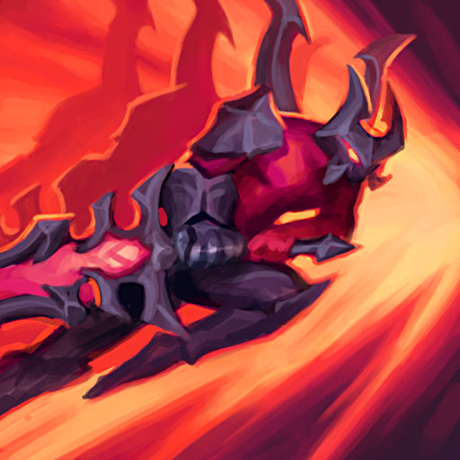

Periodically, Aatrox's next basic attack deals bonus physical damage and heals him, based on the target's max health.
Q
THE DARKIN BLADE
Aatrox slams his greatsword down, dealing physical damage. He can swing three times, each with a different area of effect.
W
INFERNAL CHAINS
Aatrox smashes the ground, dealing damage to the first enemy hit. Champions and large monsters have to leave the impact area quickly or they will be dragged to the center and take the damage again.

E
UMBRAL DASH
Passively, Aatrox heals when damaging enemy champions. On activation, he dashes in a direction.
R
WORLD ENDER
Aatrox unleashes his demonic form, fearing nearby enemy minions and gaining attack damage, increased healing, and Move Speed. If he gets a takedown, this effect is extended.